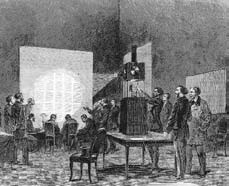
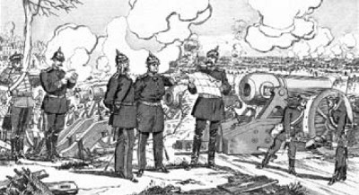
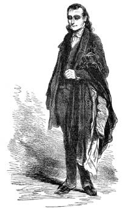

9 Nisan 1897
Lagrange yolladığı bir pusula ile beni çağırdığında, Dalla Piccola'yı yeni öldürmüştüm.
İşte belleğin oynadığı oyunlardan biri daha. Belki ciddi önem taşıyan olayları unutuyorumdur ama o akşamki heyecanımı gayet iyi anımsıyorum: Pont Royal kıyısında beklenmedik bir parlaklığın etkisiyle duruverdim. Akşam vakti, işleri hızlandırmak için elektrik ışığıyla aydınlatılmış olan Journal Officiel de L'Empire Français'in yeni merkezinin şantiyesinin tam karşısındaydım. Kirişler ve iskeleler ormanı ortasında son derece ışıklı bir kaynak bütün ışığını çalışan duvarcılara yöneltmişti. Çevrenin karanlığını yırtan o göz kamaştırıcı aydınlığın büyüsünü anlatmaya hiçbir sözcük yetmez.
Elektrik ışığı... O yıllarda aptallar gelecek tarafından kuşatıldıklarını sanıyorlardı. Mısır'da açılan bir kanal Akdeniz'i Kızıldeniz'e bağlamıştı ve artık Asya'ya ulaşmak için Afrika'nın güneyinden dolaşmaya gerek kalmamıştı (bu yüzden pek çok dürüst gemi şirketi zarar görecekti); açılışı yapılan evrensel fuarda mimarlar Haussmann'ın Paris'i mahvetmek için yaptıklarının henüz bir başlangıç olduğunu ima ediyorlardı. Amerikalıların bitirmek üzere olduğu demiryolu, kıtanın doğusundan batısına uzanıyordu; özgürlük verdikleri zenci köleler şimdi bütün ülkeye yayılacaklar ve Yahudilerden daha beter bir biçimde memleketi melez bataklığına döndürecekler. Amerika'nın Kuzey-Güney Savaşı sırasında denizaltında giden gemiler çıktı piyasaya; bu gemilerin denizcileri suda boğularak değil, havasızlıktan öldüler; babalarımızın güzel purolarının yerini, bir anda yanarak kullanıcının bütün zevkini öldüren incecik sigaralar aldı; askerlerimiz bir süredir teneke kutulara konserve edilmiş bozuk et yemeye başladı. Amerika'daki söylentilere göre sımsıkı kapanan bir kabin icat etmişlerdi; bunun içine giren kişi su pistonu sayesinde apartmanın çok yüksek katlarına çıkabiliyormuş – su pistonu cumartesi akşamı bozulduğu için insanların iki gece boyunca o kutuda kapalı kaldıkları, değil yemek hava bile bulamadıkları için pazartesi ölülerinin bulunduğu haberi de gelmişti.
Hayat daha kolaylaşıyor diye herkes pek memnundu; uzaktan konuşmaya yarayacak makineler üzerinde çalışılıyordu; bazı makineler de kalem kullanmadan mekanik biçimde yazı yazmaya yarayacaktı. Sahtesi yapılacak özgün metinler olacak mıydı gene?
İnsanlar parfümeri vitrinlerinin tadını çıkartıyorlardı; marul sütünün cildi beslemek konusunda yarattığı mucize, kınalı saç besleyici, muz suyu ile yapılan Pompadour kremi, kakao sütü, pirinç tozu, Parma menekşeleri, hepsi de şehvetli hanımları daha da çekici kılmak için yaratılmış ürünlerdi; şimdi terzi kızlar da mantenuta olma yoluna girmişlerdi, çünkü terzihanelerde onların yerini dikiş diken makineler almıştı.
Yeni zamanların tek ilginç icadı, oturarak dışkılamak için yapılmış porselen bir oturaktı.
Ama ben bile görünürdeki bu heyecanın imparatorluğun sonuna işaret ettiğini fark etmiyordum. Evrensel sergide Alfred Krupp elli tonluk, hiç görülmemiş büyüklükte bir top sermişti gözler önüne ve bu topun mermi barutu yüz libre ağırlığındaydı. İmparator, Krupp'a Légion d'honneur ödülü verecek kadar büyülenmişti ama Krupp ona bütün Avrupa ülkelerine satmaya hazır olduğu silah listesini gönderince Fransız genel komutanlığı kendi tercihleri olan silah yapımcılarını göz önünde bulundurarak imparatoru vazgeçmeye ikna etmişlerdi. Ne var ki ve elbette Prusya kralı satın almıştı bu toptan.
Napolyon eskisi gibi düşünemez olmuştu: Böbrek taşları yemek yemesini, uyumasını engelliyordu; at binmesi söz konusu bile değildi; muhafazakârlara ve karısına inanıyor, Fransız ordusunun dünyanın hâlâ en iyi ordusu olduğunu sanıyordu; oysa –bunu sonra öğrenecekti– kendi yüz bin adamına karşı Prusya'nın dört yüz bin askeri vardı; Stieber Berlin'e chassepots konusunda raporunu çoktan yollamıştı; Fransızların son moda sandığı bu tüfekler aslında müzelik olmak üzereydi. Üstüne üstlük Stieber'i sevindiren bir şey daha vardı: Fransızlar onlarınkine denk düşecek bir istihbarat servisi kuramamışlardı.
Ama biz sadede gelelim. Lagrange ile sözleştiğimiz noktada buluşmuştuk.
"Yüzbaşı Simonini" demişti her türlü alışılmış esenlemeyi bir kenara bırakarak, "Dalla Piccola hakkında ne biliyorsunuz?"
"Hiç. Neden?"
"Ortadan kayboldu ve üstelik bizim için küçük bir iş üstlenmişken oldu bu. Bence onu son gören kişi siz olmalısınız: Rahiple konuşmak istemiştiniz ve onu size yollamıştım. Sonra ne oldu?"
"Ben de daha önce Ruslara verdiğim raporu kilise çevresinden birilerine göstermesi için ona teslim ettim."
"Simonini, bir ay önce rahipten aşağı yukarı şunları yazdığı bir pusula aldım: 'Sizi mümkün olduğunca çabuk görmeliyim; şu Simonini'ye ilişkin çok ilginç şeyler anlatacağım.' İletinin havasından hakkınızda söyleyeceklerinin övgü dolu olmayacağı seziliyordu. O halde şimdi söyleyin: Rahiple aranızda ne geçti?"
"Ne demek istediğinizi anlamıyorum. Belki de –onun inancına göre– sizin için ürettiğim bir belgeyi ona teklif etmemi doğru bulmamıştı. Olasılıkla sizinle aramızdaki anlaşmalardan haberi yoktu. Bana hiçbir şey söylemedi. Onu bir daha görmedim ve ben de teklifimin sonucunu merak ediyordum."
Lagrange bana dik dik baktıktan sonra şöyle dedi: "Bunu yeniden konuşacağız." Sonra da çekip gitti.
Yeniden konuşacak pek fazla bir şey yoktu. Lagrange o andan itibaren peşimi bırakmayacaktı ve daha ciddi bir kuşkuya kapılacak olursa, rahibin sesini kesmiş olsam da o meşhur hançer sırtıma saplanacaktı.
Kendimce bazı önlemler aldım. Eski Lappe Sokağı'nda bulunan ve silah satan dükkâna uğradım; canlı baston var mı diye sordum. Vardı ama pek kötü yapılmıştı. Bunun üzerine pek sevdiğim Jouffroy Pasajı'ndaki bastoncunun vitrini aklıma geldi ve orada fildişi sapı yılan biçiminde, kendi de abanozdan son derece şık –ve sağlam– bir baston buldum. Sapı özellikle bacağın ağrıyorsa dayanmak için pek uygun değildi, çünkü hafifçe eğimliydi ve yatay olmaktan çok dikey gibiydi ama bastonun kılıç olarak kullanılması için son derece uygundu.
Canlı baston, tabancalı biriyle karşılaşman durumunda bile mucizevi bir silahtır: Korkmuş gibi yaparsın, geri adım atarsın ve bastonunu –hatta– titreyen elinle havaya kaldırırsın. Karşındaki gülmeye başlar ve çekip almak için elini uzatır; bu da onun son derece sivri ve keskin "can"ını ortaya çıkarmaya yardım eder. Karşındaki elinde kalanın ne olduğunu anlamaya çalışırken sen kılıcını hızla sallarsın ve şakağından çenesine hasmının yüzünü yarıverirsin; ister burun kanadını uçurursun, ister gözünü oyarsın; zaten alnından fışkıran kan yüzünden önünü göremez olur. Burada asıl olay karşındakinin yaşadığı beklenmedik sürprizdir ve bu noktada zaten varlığı söz konusu bile değildir.
Hasmın mesela bir hırsız parçası gibi önemsiz biriyse, bastonunu alır ve onu ömrü boyunca çirkinliğe mahkûm ederek çeker gidersin. Ama daha tehlikeli bir düşmansa, ilk kılıç darbesinden sonra, sanki kolunun dinamiğini izlercesine geri dönersin ve boğazını kesersin; böylece yüzündeki yara izi için kaygılanmasına gerek bile kalmaz.
Tabii bir de elimde böyle bir bastonla gezmenin bana kazandırdığı saygın ve dürüst hava vardı – bu pahalıya mal oluyordu ama önemi yoktu, çünkü bazı durumlarda masraflara göz yummak gerekir.
Bir akşam eve dönerken, dükkânın önünde Lagrange'a rastladım.
Bastonumu şöyle bir salladım ama sonra gizli servisin benim gibi birini ortadan kaldırmak için onun tarzında bir adamı görevlendirmeyeceğini düşünerek ona kulak verdim.
"Güzel bir nesne" dedi.
"Ne?"
"Canlı baston. Topuzu bu biçimdeyse, canlı bastondan başka bir şey olamaz. Korktuğunuz biri mi var?"
"Korkmam gerekiyor mu, siz söyleyin Bay Lagrange."
"Bizden korktuğunuzu biliyorum, çünkü sizden kuşkulandığımızın farkındasınız. Şimdi izin verin, sözün özüne geleyim. Fransa-Prusya savaşı çok yakınımızda ve dostum Stieber Paris'i ajanlarıyla doldurdu."
"Tanıyor musunuz onları?"
"Hepsini değil. Burada devreye siz giriyorsunuz. Stieber'e Yahudilere ilişkin raporunuzu verdiğinize göre o sizin, nasıl desem, satın alınabilecek bir kişi olduğunuzu düşünüyor... İşte şimdi Paris'e onun adamlarından biri olan ve sanırım sizi tanıştığınız Goedsche diye biri geldi. Sizi arayacağınızı tahmin ediyoruz. Paris'te Prusyalıların casusu olacaksınız."
"Kendi ülkeme karşı mı?"
"Numara yapmayın, burası sizin ülkeniz değil ki. Ve eğer bu sizi rahatsız edecekse bunu bizzat Fransa için yapacaksınız. Prusyalılara düzmece bilgiler aktaracaksınız, biz de icabına bakacağız."
"Zor görünmüyor."
"Tam tersine, çok tehlikeli bir durum. Paris'te yakalanırsanız, sizi tanımıyor gibi davranmak zorundayız. Siz de bu arada kurşuna dizilirsiniz. Prusyalılar iki taraflı çalıştığınızı anlarlarsa, pek yasal olmayan bir biçimde alırlar canınızı. Ana fikir, bu olayda hayatta kalma oranınız yüzde elli diyelim."
"Kabul etmezsem?"
"Oran yüzde doksan dokuza çıkar."
"Neden yüz değil?"
"Canlı baston yüzünden. Ama gene de çok güvenmeyin ona."
"Gizli serviste samimi dostlarım olduğunu biliyordum. Bu özeniniz için size teşekkür ederim. Anlaştık. Özgür irademle ve vatan aşkıyla teklifi kabul ediyorum."
Bir hafta sonra, her zamankinden daha terli ve bakımsız Goedsche dükkânımda boy gösterdi. Boğazını sıkmamak için kendimi zor tuttum.
"Sizi intihalci ve sahtekâr olarak gördüğümü biliyor olmalısınız" dedim.
"Sizin kadar değil" diye sırıttı iğrenç bir ifadeyle ve Almanca olarak. "Prag Mezarlığı öykünüzü hapse düşen Joly'nin metninden esinlenerek yazdığınızı keşfetmedim sanmayın. Siz olmasanız ben bu sonuca zaten varırdım ama siz sadece yolu kısalttınız."
"Farkına varmışsınızdır Herr Goedsche, Fransız topraklarında bir yabancı olarak hareket ederken adınızı malum kişilere verirsem hayatınız üç kuruş bile etmeyecektir."
"Farkına varmışsınızdır ki tutuklandığımda sizin adınızı verirsem, sizinki de daha fazla etmeyecektir. Onun için barış yapalım. Kitabımın o bölümünü gerçek bir şey gibi emin alıcılara satmaya çalışıyorum. Mademki bundan sonra birlikte çalışacağız, parayı da yarı yarıya kırışacağız."
Savaş başlamadan birkaç gün önce Goedsche beni Notre Dame'ın bitişiğindeki bir evin çatısına çıkardı; orada yaşayan ihtiyarın pek çok güvercinliği vardı.
"Burası güvercin uçurmak için ideal bir yer, çünkü katedral civarında yüzlerce güvercin olur ve bizimkiler kimsenin dikkatini çekmez. İşe yarar bir bilgi ele geçirdiğinizde bir mesaj yazın; ihtiyar onu kuşların biriyle uçuracaktır. Ayrıca her sabah buraya uğrayın ve size bir haber gelip gelmediğini kontrol edin. Basit değil mi?"
"Sizi ilgilendiren haberler hangileri?"
"Paris hakkında bizi neyin ilgilendireceğini şimdilik bilmiyoruz. Şu anda sınır bölgelerini kontrol ediyoruz. Ama eninde sonunda, savaşı kazanırsak Paris ile ilgileneceğiz. O zaman birliklerin hareketleri, imparator ailesinin burada bulunup bulunmaması, vatandaşın hali gibi pek çok şey ya da hiçbir şey işe yarayacaktır; neyin ilginç olduğunu kestirmek size düşüyor. Haritalara gereksinme duyabiliriz; şimdi bir haritanın güvercin boynunda nasıl taşınabildiğini merak ediyor olabilirsiniz. Gelin benimle alt kata."
Alt kattaki fotoğraf laboratuvarında bir başka şahıs daha gördüm; bir duvarı beyaza boyanmış salonda, fuarlarda sihirli lamba dedikleri ve duvara ya da beyaz çarşafa görüntü yansıtan projektörlerden vardı.
"Bu bey, büyüklüğü ne olursa olsun sizin mesajınızı alacak ve kaç sayfa olursa olsun, onu fotoğraflayacak, bir kolodyum kâğıt üzerine basacak ve güvercinle gönderecek. Mesaj, vardığı yerde bir duvara yansıtılarak büyütülecek. Aynı şey çok uzun mesajlar almanız durumunda burada da gerçekleştirilecek. Ama buranın havası bir Prusyalıya uygun olmadığından ben bu akşam Paris'ten ayrılıyorum. İki sevgili gibi güvercin kanadıyla taşınacak pusulalarla haberleşeceğiz."

"Mesaj, vardığı yerde bir duvara yansıtılarak büyütülecek."
Bu düşünceden nefret etmiştim ama, maalesef söz vermiştim bir kere ve bunun nedeni de bir rahip öldürmüş olmamdı. Binlerce insan öldüren generallere ne demeliydi peki?
İşte böyle böyle savaş çıktı. Lagrange arada sırada düşmana aktarılacak haberler geçiyordu bana ama Goedsche'nin dediği gibi Prusyalılar Paris ile pek ilgilenmiyorlardı ve şimdilik sadece Fransa'nın Alzas'ta, Saint-Privat'da, Beaumont'da, Sedan'da ne kadar askeri olduğunu öğrenmeye çalışıyorlardı.
Kuşatma günlerine kadar Paris hâlâ neşeli bir hayat sürüyordu. Eylül ayında bütün gösteri salonlarının kapatılmasına karar verildi; bunun nedeni hem cephedeki askerlerin dramını paylaşmak hem de itfaiyecileri cepheye yollamaktı ama bir ay geçmeden Comédie-Française evlerini ısıtmayan, gaz lambası yerine mum yakan şehit ailelerini ekonomik olarak destekleme adına gösteri yapma iznini yeniden alabildi; sonra Ambigu; Porte Saint-Martin, Châtelet ve Athénée'de de gösteriler devam ettirildi.
Zor günler eylül ayında Sedan trajedisiyle başladı. Napolyon düşmana esir düşünce imparatorluk çökmeye başladı ve Fransa'nın tamamı, neredeyse (şimdilik neredeyse) bir devrim heyecanına kapıldı. Cumhuriyet ilan ediliyordu ama Cumhuriyetçilerin sıralarında anladığım kadarıyla iki ayrı ruh vardı: Biri yaşanan yenilgiden sosyalist bir devrim çıkarmak isterken, öteki de sonunda ciddi bir komünizme dönüşecek olan reformlara boyun eğmemek için Prusyalılarla barış anlaşması imzalamak arzusundaydı.
Eylül ortasında Prusyalılar Paris kapılarına dayanmışlardı ve savunmaları gereken kaleleri zapt etmiş, kenti bombalamaya başlamışlardı. Beş aylık kuşatma öyle ağır geçti ki, açlık en büyük düşman haline geldi.

Eylül ortasında Prusyalılar Paris kapılarına dayanmışlardı ve savunmaları gereken kaleleri zapt etmiş, kenti bombalamaya başlamışlardı.
Siyasi entrikalardan, şehrin farklı yerlerinde düzenlenen yürüyüşlerden pek bir şey anlamıyordum ve zaten pek de ilgilenmiyordum; bu gibi süreçlerde fazla ortalıkta görünmemek en iyisiydi. Ama yiyecek beni ciddi olarak ilgilendiren bir konuydu ve bizi nelerin beklediğini anlayabilmek için mahallemdeki satıcılarla her gün haberleşiyordum. Lüksemburg Bahçeleri gibi parklarda gezinirken başlarda şehrin çiftlik haline geldiğini düşünmüştüm, çünkü küçük ve büyükbaş hayvanlar ortalıkta geziniyordu. Ama daha ekim ayında yirmi beş bin öküz ve yüz bin koyun kaldığı lafı dolaşmaya başlamıştı ki, bu büyük bir şehri doyurmaya yetmeyebilirdi.
Gerçekten de bazı evlerde akvaryum balıkları kızartılmaya başlanmıştı; orduya katılmamış bütün atlar etleri için kesiliyordu; patatesin fiyatı otuz frank olmuştu; pastacı Boissier bir kutu mercimeği yirmi beşe satıyordu. Tavşanların gölgesi bile kalmamıştı ve kasaplar önce tombul kedileri, sonra besili köpekleri vitrinlerinde sergilemekten çekinmez olmuşlardı. Jardin d'acclimatation'daki bütün egzotik hayvanlar kesilmiş, Noel gecesi, Voisin'de harcayacak parası olanlara fil eti konsomesi, İngiliz usulü kızartılmış deve eti, kanguru eti sotesi, souce poivrade ile pişirilmiş ayı pirzolası, trüf mantarlı antilop güveci, süt faresi eşliğinde kedi eti sunulmuştu –, çünkü artık çatılarda serçeler görülmüyor ama lağımlardan fareler ve sıçanlar çıkıyordu.
Deveye diyeceğim yoktu ama asla sıçan yiyemezdim. Kuşatma zamanında bile kaçakçılar ve karaborsacılar vardı; son derece pahalı ama unutulmaz bir akşam yemeğinde büyük lokantaların birinde değil neredeyse sayfiyede bulunan bir gargote'ta, seçkin kişilerle (hepsi Paris'in en iyi sosyetesine ait değillerdi ama bu gibi durumlarda sınıf farkları unutuluyordu) sülün ve taze kaz ciğeri tadabilmiştim.
Ocak ayında Almanlarla ateşkes imzalanmıştı ve Almanlar mart ayında başkenti sembolik biçimde işgal etmişlerdi – çivili miğferleriyle Champs-Élysées'de geçit töreni yaptıklarını görmek benim bile içimi burkmuştu. Sonra Almanlar güneybatı bölgesinin kontrolünü Fransız hükümetine bırakarak kentin kuzeydoğusuna yani Ivry, Montrouge, Vanves, Issy ve güçlendirilmiş Mont-Valérien kalelerine yerleştiler (bunu Prusyalılar da denemişti), çünkü buradan kentin batısı kolayca bombalanabilirdi.
Prusyalılar Paris'i terk ediyor, Thiers başkanlığındaki Fransız hükümeti işbaşı yapıyordu ama artık denetlenmesi çok zor olan Ulusal Muhafızlar daha önce halkın yardımıyla satın aldıkları ve Montmartre'a sakladıkları topları ortaya çıkardılar. Thiers, General Lecomte'u önce Ulusal Muhafızlar'a ve kalabalığa ateş etmekle görevlendirdi ama sonunda onun askerleri de isyancılara katıldı ve Lecomte kendi adamlarınca tutuklandı. Bu arada birileri, bilmem nerede Thomas adındaki generali tanımıştı; o da 1848 yılında isyanın bastırılmasında iyi anılar bırakmamış bir kişiydi. Şimdi sivil giysilerle, belki de özel nedenlerle kaçmaktaydı ama herkes onun isyancılara casusluk yaptığını söylüyordu. O da yakalanarak Lecomte'un yanına götürüldü ve ikisi birlikte kurşuna dizildiler.
Thiers, hükümetiyle Versay'a çekiliyordu ve mart sonunda Paris'te komün ilan ediliyordu. Şimdi Mont-Valérien'den Paris'i bombalayan ve kuşatan Versay hükümeti idi; Prusyalılar ise buna göz yumuyorlardı, daha doğrusu onların sınırını geçen herkese son derece hoşgörülü davranıyorlardı; böylece Paris ikinci kuşatılmasında birincisinden daha fazla yiyecek bulabiliyordu: Kendi vatandaşlarınca aç bırakılanlar düşman tarafından doyuruluyordu. Ve birileri Almanları Thiers hükümetiyle karşılaştırınca bu lahanacıların aslında iyi Hıristiyanlar olduğunu fısıldamaya başlamıştı.
Fransız hükümetinin Versay'a çekildiği ilan edilirken, Goedsche'den aldığım bir pusula bana Prusyalıların artık Paris'te olup bitenle ilgilenmediklerini ve bu nedenle güvercinliğin ve fotoğraf laboratuvarının iptal edileceğini bildiriyordu. Ama aynı gün beni ziyaret eden Lagrange sanki Goedsche'nin yazdıklarından haberdar bir hava içindeydi.
"Sevgili Simonini" demişti bana, "Prusyalılar için yaptığınızı şimdi bizim için yapacak ve bizi durumdan haberdar edeceksiniz. Sizinle işbirliği yapan o iki sefili tutuklattım. Güvercinler alışık oldukları yere uçtular ama laboratuvar malzemelerini biz kullanacağız. Biz hızlı askeri bilgi için Issy kalesi ve Notre Dame yakınlarında bize ait bir çatı arasında hızlı bir hat kurmuştuk. Bize oradan istihbarat ileteceksiniz."
" 'Bize' mi? Siz imparatorluk emniyetinin adamıydınız, imparatorunuzla birlikte ortadan kaybolmanız gerekirdi. Sanırım şimdi Thiers hükümeti adına konuşur gibisiniz..."
"Yüzbaşı Simonini, ben hükümetler gelip geçtiğinde de yerinde kalan kişilerdenimdir. Şimdi hükümetimi Versay'da izliyorum, çünkü burada kalırsam Lecomte ve Thomas'ın başına gelenler benim de başıma gelebilir. Bu zavallılar kolayca dizildiler kurşuna. Biz kaz gelecek yerden tavuk esirgemeyeceğiz. Kesin bir istihbarat istediğimizde size daha ayrıntılı emirler iletilecektir."
Kesin bir istihbarat... Söylemesi kolaydı, çünkü kentin dört bir yanında farklı olaylar yaşanıyordu; Ulusal Muhafız birlikleri tüfeklerinin namlularına çiçek takarak, ellerinde kırmızı bayrakla geçitler yapıyorlar; aynı mahallelerde kentsoylular evlerine kapanmışlar, yasal hükümetin dönmesini bekliyorlardı. Komüne seçilen kişilerin kim oldukları anlaşılamıyordu, ne gazetelerden ne pazarlardaki fısıltılardan öğrenmek mümkün olmuyordu; kimin hangi taraftan olduğu meçhuldü: İşçiler, hekimler, gazeteciler, ılımlı Cumhuriyetçiler, öfkeli sosyalistler ve hatta Seksen Dokuz Komünü'nü değil o korkunç Doksan Üç Komünü'nün dönüşünü bekleyen gerçek Jakobenler bile komünde yer alıyorlardı. Ama sokaklarda hissedilen sevinç ve mutluluktu. Erkeklerin üzerinde üniforma olmasa büyük bir halk şenliğinde olduğumuz sanılabilirdi. Askerler Torino'da sussi dediğimiz ve burada au bouchon diye bilinen oyunu oynuyorlardı; subaylar kızların önünde gerine gerine yürüyerek hava atıyorlardı.
Bu sabah eski eşyalarım arasında bulunması gereken ve içinde döneme ait gazete kupürleri olan bir kutu geldi; belleğimin tek başına oluşturmakta güçlük çektiği sahneleri bu gazeteler sayesinde zenginleştirebilirim diye düşündüm. Bulduklarım farklı eğilimlere ait başlıklardı: Le Rappel, Le Réveil du Peuple, La Marseillaise, Le Bonnet Rouge, Paris Libre, Le Moniteur du Peuple ve benzerleri. Bunları kim okurdu bilmiyorum; belki de sadece yazanlar okuyordu. Benim hepsini satın almamın nedeni Lagrange'ı ilgilendirebilecek olay ve görüşleri toparlamak istememdi.
Durumun ne kadar karışık olduğunu, günlerden bir gün aynen karışık bir gösterinin karışık kalabalığı arasında Maurice Joly ile karşılaşınca anladım. Sakalım yüzünden tanımakta zorlandı ama sonra beni Carbonaro üyesi ya da benzeri bir şey olarak hatırlayarak şimdi de Komün için çalıştığımı sandı. Talihsiz günlerinde ona karşı kibar ve cömert bir dostluk sergilemiş olduğumdan, koluma girdi, beni evine (Voltaire rıhtımında gayet basit bir ev) götürdü ve bir kadeh Grand Marnier eşliğinde içini döktü.
"Simonini" dedi, "Sedan'dan sonra ilk Cumhuriyetçi hareketlerde yer aldım, savaşın devamı için gösterilere katıldım ama sonra bunların arzularında abarttıklarını fark ettim. Devrim Komünü Fransa'yı işgalden kurtardı ama tarihte bazı mucizeler iki kez yinelenmezler. Devrim buyrukla ilan edilmez, halkın kalbinden doğar. Ülke yirmi yıldan beri ahlaki bir kangren yaşamakta; yeniden canlanması iki gün içinde olamaz. Ben Bonapart yanlısı olduğum için iki yıl hapishanede acı çektim ve çıktığım zaman yeni kitaplarımı yayımlayacak bir yayıncı buldum. Şimdi diyeceksiniz ki: o zaman imparatorluk sürüyordu. Ama imparatorluğun çökmesiyle bu Cumhuriyetçi hükümet, ekim sonunda Hotel de Ville'in barışçıl işgaline katıldığım gerekçesiyle beni yargıladı. Tamam, şiddetle suçlanmam mümkün olamadığı için aklandım ama imparatorluğa ve onursuz ateşkese karşı çarpışanlar böyle ödüllendiriliyorlardı işte. Şimdi öyle görünüyor ki, bütün Paris komün ütopyasını yüceltiyor ama askerlik yapmamak için kenti terk edenlerin sayısını bilseniz şaşarsınız. On sekiz ve kırk yaş arası bütün erkeklerin zorunlu olarak askere alınacağı hakkında bir söylenti dolaşırken bakın ne çok yüzsüz genç sokaklarda ve Ulusal Muhafızlar'ın girmeye cesaret edemedikleri mahallelerde avare dolaşıyor. Devrim için can vermeye gönüllü sayısı pek de fazla değil. Ne hazin!"
Joly bana hiçbir şeyden tatmin olmayan ama gerçekten de yolunda gidecek bir şey bulamayan, deva bulmaz bir idealist gibi göründü. Ama onun zorunlu askerlik söylemi beni de huzursuz etti ve saçlarımla sakallarımı beyaza boyadım. Şimdi tam bir altmışlık gibi duruyordum.
Joly'nin tersine meydanlardaki ve pazarlardaki insanların, kuşatma sırasında ev sahiplerinin yükselttiği kiraların düşürülmesi, gene aynı dönemde rehine verilen her türlü aletin işçi sahiplerine geri verilmesi, şehit düşmüş Ulusal Muhafızlar'ın eşlerine ve çocuklarına maaş bağlanması, senetlerin ödenme tarihlerinin ertelenmesi gibi yeni yasalardan hoşnut olduğunu görüyordum. Bunlar komünlerin kasalarını yoksullaştıran ama ayaktakımının işine gelen güzel şeylerdi.
Gene aynı ayaktakımı (Maubert Meydanı'nda ve mahallelerin birahanelerinde konuşulanlara kulak vermek yeterliydi) giyotinin kaldırılmasını alkışlarken (elbette) mahalledeki pek çok işçinin hayatını karartan fahişeliği yasaklayan yasaya karşı çıkıyordu. Paris'in bütün yosmaları Versay'a göç etmişlerdi; Ulusal Muhafızlar'ın yiğitleri gençlik ateşlerini nerede dindiriyorlardı bilmem.
Kentsoyluları kendine düşman etmek için işte şimdi kilise karşıtı yasalar çıkıyordu; kilise ve devletin birbirinden ayrılması, kilisenin mallarına el konması –papazların ve rahiplerin tutuklanması gibi söylentileri hiç saymıyorum– bu yasalardan bazılarıydı.
Nisan ortasında Versay ordusunun bir öncüsü kuzeybatı bölgesine, Neuilly'ye girmiş ve yakaladığı herkese ateş etmeye başlamıştı. Mont-Valérien'den açılan ateşle Zafer Takı bombalanıyordu. Birkaç gün sonra kuşatmanın en inanılmaz olayına tanık oldum: Masonların geçit resmi. Masonların Komün yanlısı olduğunu sanmıyordum ama işte amblem ve tören önlükleriyle yürüyorlardı: Bombalanan köylerdeki yaralıları taşımak için Versay hükümetinin kısa bir ateşkes yapmasını istiyorlardı. Zafer Takı'na kadar geldiler, o sırada büyük bir rastlantı sonucu top atışı durmuştu, çünkü belli ki biraderlerinin büyük bölümü kral yanlılarıyla şehir dışındaydı. Ama işte Versay masonları bir günlük ateşkes için kullanılmışlardı; anlaşma orada kalmıştı ve Paris masonları Komün'le aynı safta yer almıştı.
Komün günlerinde yüzeyde olup bitenler hakkında pek fazla bir şey hatırlamamamın nedeni o günlerde Paris'i yeraltından kat etmekte olduğumdur. Lagrange'ın bir mesajı yüksek askeri kumandanların öğrenmek istedikleriyle ilgiliydi. Paris'in altının kanalizasyon sistemiyle delik deşik edildiğine inanılır ve bu romancıların da pek hoşuna giden bir konudur ama lağım ağının altında da şehrin sınırlarına hatta daha ötesine kadar uzanan kireçtaşı ocakları ve antik yeraltı mezarları vardır. Bazıları hakkında az bazıları hakkında da çok bilgi vardır. Askerler şehrin dış dairelerinde bulunan kalelerin yeraltından kent merkezine bağlandığını biliyorlardı ve Prusyalılar geldiğinde düşmanın kötü bir sürpriz yapmasını engellemek için bazı geçişleri aceleyle kapamışlardı; oysa Prusyalılar bu olasılığı hiç düşünmedikleri gibi bu dolambaçlı dehlizlere girmek bir daha çıkamamak ve mayınlı bir arazide ölmek anlamına geldiği için hiç cesaret edememişlerdi.
Aslında yeraltı mağaraları ve mezarları çok fazla bilinmezdi; bunlara ilişkin en çok bilgi sahibi olanlar yeraltı dünyasının kopuklarıydı ve bu dehlizleri karaborsa malları gizlemek ve polis baskınından kaçmak için kullanıyorlardı. Benim görevim kanallarda yolumu bulabilmek için mümkün olan bütün çapulcuları sorgulamaktı.
Emir pusulasını suçlamak için kendimi tutamamış ve şunu iletmiştim: "İyi ama ordunun ayrıntılı haritaları yok mu?" Lagrange bana şöyle yanıt vermişti: "Aptalca sorular sormayın. Savaşın başında Genelkurmay kazanacağından o kadar emindi ki Fransa değil sadece Almanya haritası dağıtmıştı."
İyi yemek ve şarabın bulunmaz olduğu dönemlerde tapis franc'larda eski ahbapları yakalayıp onları güzel bir kümes hayvanı ve birinci kalite şarap ikram edebileceğim şık lokantalara götürmek kolay bir çözümdü. Bu kişiler sadece konuşmakla kalmıyorlar, şahane yeraltı gezintilerinde rehberlik ediyorlardı. Önemli olan iyi bir fenere sahip olmak, sağa ya da sola ne zaman dönüleceğini akılda tutabilmek için yol boyunca bulunan giyotin resmi, eski bir tabela, kömürle çizilmiş şeytan eskizi ya da buradan hiç çıkamamış birinin adı gibi farklı işaretleri zihne kaydetmekti. Bu savaş anıtı yol boyunca ilerlemekten çekinmemek gerekiyordu, çünkü doğru kurukafalar izlendiğinde, birkaç basamakla zevkli bir lokalin bodrum katına ulaşılıyor ve sonra yeniden yıldızları seyretmeye dönülebiliyordu.
Bu yerlerin bazıları sonraki yıllarda ziyaret edilebildi ama bazıları sadece benim muhbirlerimin bildikleri yerler olarak kaldı.
Sözün kısası, mart sonuyla mayıs sonu arası bayağı para hak ettim; Lagrange'a olası yolları işaret eden çizimler gönderiyordum. Sonra iletilerimin pek bir işe yaramadığını fark ettim, çünkü hükümet artık Paris'e girmek için yeraltını kullanmıyordu. Versay'ın şimdi beş kolordusu vardı; askerleri eğitimli ve bilinçliydi ve kısa sürede çözeceğimiz üzere, akıllarında tek bir düşünce vardı: Asla tutuklanmayı kabul etmiyorlardı; yakalanan her asker ölü bir adam olmalıydı. Evet, alınan karar buydu ve hatta hükmün uygulanışını gözlerimle görecektim. Tutuklular, on kişiyi aşarsa idam mangasına bir mitralyöz verilecek denmişti. Düzenli ordunun erlerinin yanına brassardier'ler de katılmaya başlanmıştı; kollarına üç renkli bir şerit sarılan bu kürek mahkûmu ve benzeri tipler düzenli birliklerden çok daha acımasız oluyordu.
21 Mayıs Pazar günü, öğleden sonra saat ikide sekiz bin kişi Ulusal Muhafızlar'ın dul eşleri ve yetim çocukları yararına verilen konseri dinlemek için Tuileries Parkı'nda toplanmıştı ve henüz kimse yardım edilmesi gereken garibanların o andan itibaren hızla çoğalacağını bilmiyordu. Gerçekten de (ama bu sonra öğrenildi) konser sürerken, saat dört buçukta hükümet üyeleri Saint-Cloud kapısından Paris'e giriyorlar, Auteuil ile Passy'yi işgal ediyorlar, yakalanan bütün Ulusal Muhafızlar'ı öldürüyorlardı. Sonradan söylenenlere göre akşamın yedisinde en az yirmi bin Versaylı şehre girmişti ve Komün yetkilileri bu arada kim bilir ne yapıyorlardı. Devrim yapmak için iyi bir askeri eğitim gerekiyordu ama iyi bir eğitimin varsa devrim yapmıyor, iktidar tarafında duruyordun; işte bu nedenle devrim yapmak için bir neden göremiyordum (mantıklı bir nedenden söz ediyorum).
Pazartesi sabahı Versaylılar toplarını Zafer Takı'nın altına yerleştiriyorlardı; birileri Komüncülere düzenli savunma yapmaktan vazgeçmelerini ve herkesin kendi mahallesinde barikat kurmasını emretmişti. Eğer bu doğru idiyse Versay askerlerinin daha da işine gelirdi.
Şimdi dört bir yanda barikatlar kuruluyor, Opéra ya da Saint-Germain'in faubourg'u yani uzak semtleri gibi Komün düşmanı mahallelerde bile görünürde halk buna yardım ediyordu; Ulusal Muhafızlar şık hanımları evlerinden çıkartıyorlar ve en değerli mobilyalarını sokağa yığmaları için teşvik ediyorlardı. Bir sonraki barikatın yerini belirlemek için yola bir ip çekiliyordu ve herkes gidip oraya sökülmüş bir kaldırım taşı ya da kum torbası bırakıyordu; pencerelerden iskemleler, komodinler, sedirler, şilteler atılıyordu; bu kimi zaman ev sahibinin rızasıyla kimi zaman da artık boş kalmış evin en arka odasına kapatılan ev sahibinin gözyaşlarına rağmen yapılıyordu.
Bir subay işbaşındakileri bana gösterdi ve şöyle dedi: "Siz de bir el verin vatandaş; sizin de özgürlüğünüz için ölmeye gidiyoruz!"
Ben de bir şeyler yapar gibi yapmak için yolun sonuna düşmüş bir tabureyi almaya gittim ve köşeyi dönüp sıvıştım.
Parisliler bir yüzyıldan beri barikat yapmayı severler; pek ciddi olmasa da ilk top atışıyla da dağılırlar: Barikatlar kendilerini kahraman gibi hissetmelerine yarar ama önemli an geldiğinde barikat kuranların kaçının ortada kaldığını merak ederim. Benim gibi yapacaklardır, savunmada en aptallar kalacak, onlar da oldukları yerde vurulacaklardır.
Paris'te işlerin nasıl geliştiğini görmek sadece uçan balona binmekle mümkün olacaktı. Kimi Ulusal Muhafızlar'ın toplarının bulunduğu École Militaire'in işgal edildiğini, kimi Clichy Meydanı'nda savaşıldığını, kimi de Almanların hükümete kuzeyde giriş yapma hakkını tanıdığını söylüyordu. Salı günü Montmartre ele geçiriliyor, kırk erkek, üç kadın ve dört çocuk Komüncülerin Lecomte ve Thomas'yı kurşunladıkları yere götürülüyor ve orada kurşuna diziliyorlardı.
Çarşamba günü Tuileries dahil pek çok kamusal yapının alev aldığını gördüm; kimi hükümetin ilerlemesini durdurmak için Komün yanlılarının, kimi de gözünü şeytan bürümüş bazı Jakobenlerin, petroleuse'lerin, ellerinde petrol tenekesiyle dolaşıp, yangın çıkarttıklarını söylüyordu; yangınları hükümetin attığı havan toplarının çıkardığına yemin eden de vardı, eski Bonapart yanlılarının tehlikeli arşivleri yok etmek için bu bahaneden yararlandıklarını söyleyen de – ilk anda ben de Lagrange'ın yerinde olsaydım böyle yapardım diye düşündüm ama sonra iyi bir gizli ajanın istihbaratı sakladığını ama yok etmediğini fark ettim, çünkü birilerine şantaj yapmak için bilgiler her zaman işe yarardı.
Aşırı kuruntulu davranarak ve bir çarpışmanın ortasında kalma korkusuyla, son kez olmak üzere güvercinliğe gittim ve orada Lagrange'dan gelen bir ileti buldum. Bana artık güvercinlerle haberleşmemize gerek kalmadığını söylüyor ve Louvre yakınlarında bir adres veriyordu; şimdi işgal altında olan bu yere giderek hükümet yanlılarının kapattığı kapılardan parolayla geçebilecektim.
Tam o anda hükümet yanlılarının Montparnasse'a vardıklarını öğrendim; Montparnasse'taki bir şaraphanenin mahzenini ziyaret etmiştim; buraya Assas Sokağı'nın altından uzanan ve Cherche Midi Sokağı'na varan bir kanaldan gitmiştim; bu yol kavşaktaki terk edilmiş bir yapının deposuna çıkıyordu; Croix-Rouge ağırlıklı olarak Komün'ün elindeydi. O ana dek yeraltı araştırmalarım bir işe yaramamış olduğundan ve kendimi çabamın karşılığını kazanmak zorunda hissettiğimden Lagrange'a gittim.
Île de la Cité'den Louvre yakınlarına varmam zor olmadı ama Saint Germain l'Auxerrois'nın arkasında beni biraz etkilediğini itiraf etmek zorunda kaldığım bir sahneyle karşılaştım. Bir erkek, bir kadın ve bir çocuk geçiyordu ve zorla ele geçirilmiş bir barikattan kaçar gibi bir havaları yoktu; derken olasılıkla Louvre'un ele geçirilişini kutlayan sarhoş brassardier çetesi adamı kadının kolundan çekiştirdiler, kadın ağlayarak kocasına sarılınca üçünü de duvara doğru ittiler ve oracıkta delik deşik ettiler.
Parolamı verebilmek için gerçek askerlerin olduğu sıralardan geçmeye çalıştım ve bazı kişilerin büyük kent haritasına renkli raptiyeler sapladıkları bir salona alındım. Göremeyince, Lagrange'ı sordum. Orta yaşlarda son derece sıradan suratlı (yani tanımlamaya kalksam hiçbir özelliğini sayamayacağım) bir bey döndü ve elimi sıkmadan beni medeni bir şekilde selamladı.
"Yüzbaşı Simonini, tahmin ediyorum. Adım Hébuterne. Bu andan sonra Bay Lagrange ile yapmış olduğunuz her işi benimle yapacaksınız. Biliyorsunuz, devletin gizli servisleri de, özellikle savaş sonunda yenilenmek zorundadır. Bay Lagrange onurlu bir emekliliği hak ediyordu, belki de şimdi bu sevimsiz kalabalıktan uzakta, bir yerlerde à la ligne balık avlıyordur."

Orta yaşlarda son derece sıradan suratlı [...] bir bey döndü ve elimi sıkmadan beni medeni bir şekilde selamladı. "Yüzbaşı Simonini, tahmin ediyorum. Adım Hébuterne..."
Soru sormanın sırası değildi. Ona Assas Sokağı'ndan Croix-Rouge'a uzanan yeraltı kanalından söz ettim; Hébuterne Croix-Rouge'da bir operasyon yapmanın çok yararlı olacağını, çünkü Komün yanlılarının güneyden geleceğini tahmin ettikleri hükümet yanlılarına karşı oraya asker yığdıklarının haberini aldığını söyledi. Bu nedenle bana gidip adresini ona verdiğim şaraphanede brassardier çetesini beklememi söyledi.
Acele etmeden, Hébuterne'in benden önce oraya varması için Sen kenarından yürüyerek Montparnasse'a ulaşmayı düşünürken sağ kıyının bir kaldırımında kurşuna dizilmiş yirmi cesedin yattığını gördüm. Belli ki yeni öldürülmüşlerdi ve hepsi farklı sosyal sınıflardan, farklı yaşlardan kişilerdi. Proleter giyimli ağzı bir karış açık gencin yanında kıvırcık saçlı, bıyıkları bakımlı, ellerini henüz kırışmış redingotunun üzerinde kavuşturmuş orta yaşlarda bir kentsoylu yatıyordu; onun yanındaki tipin sanatçı bir havası vardı; bir tanesi de sol gözünden kurşun yediği için tanınmaz bir haldeydi, kim bilir kaç kurşunla dağılmış beynini bir arada tutmak isteyen merhametli biri başının etrafına bir havlu sarmıştı. Ve bir de kadın vardı; belki de bir zamanlar güzeldi.
Oracıkta, mayıs güneşi altında yatıyorlardı, mevsimin ilk sinekleri şölene koşmuş, üzerlerinde uçuşuyordu. Sanki rastgele seçilmişler ve birilerine ders olsun diye vurulmuşlar, sonra da o sırada geçmekte olan ve top arabasını çeken hükümet yanlısı mangaya yol açmak için kaldırıma dizilmişler gibiydiler. Bu yüzlerde beni en çok etkileyen, yazarken bile rahatsız olduğum unsur umursamazlıktı: Sanki onları bir araya getirmiş olan kadere razı olarak uyuyakalmışa benziyorlardı.
Sıranın sonuna geldiğimde, ötekilerden biraz ayrı yatan, sanki buraya sonradan taşınmış gibi duran son ölünün görüntüsü beni altüst etti. Yüzünün bir bölümü kurumuş kanla kaplı olsa da Lagrange'ı hemen ve gayet net tanıdım. Gizli servis yenileniyordu.
Ruhum kadın gibi hassas değildir ve bir rahibin cesedini lağım kanalına sürüklemişliğim bile vardır ama işte bu görüntü beni çok rahatsız etti. Merhametten değil, bunun benim başıma da gelebileceğini düşündüğümden tedirgin olmuştum. Buradan Montparnasse'a giderken Lagrange'ın adamı olduğumu bilen birine rastlamam yeterliydi; bu bir Versaylı ya da bir Komüncü olabilirdi; her ikisinin de bana güvensizlik duymaya hakkı vardı ve o günlerde güvensizlik demek öldürmek demekti.
Hâlâ yanmakta olan yapıların orada Komün yanlılarına rastlamamın zor olacağını ve hükümet yanlılarının henüz bölgeyi gözaltına almamış olduklarını hesaplayarak Sen Nehri'ni geçmeyi, Bac Sokağı'nı boydan boya yürümeyi ve Croix-Rouge kavşağına varmayı göze aldım. Oradan hemen terk edilmiş depoya girebilir ve yolun gerisini yeraltından tamamlayabilirdim.
Croix-Rouge dörtyol ağzında savunma sisteminin benim binaya ulaşmamı engelleyeceğini sandıysam da böyle olmadı. Silahlı gruplar bazı evlerin eşiklerinde emir bekliyorlardı; ağızdan ağza çelişkili haberler dolaşıyordu; hükümet yanlılarının ne taraftan gelecekleri bilinmiyordu; birileri söylentilere göre küçük barikatları şu yolun ağzından alıp, bu yolun ağzına taşıyordu. Ulusal Muhafızlar'ın oluşturduğu daha ciddi bir grup yaklaşmaktaydı ve bu kentsoylu mahallenin halkının çoğu askerleri boş yere kahramanlık yapmamaları için uyarmaya çalışıyorlardı; Versay'ın adamlarının da Cumhuriyetçilerin de yurtsever olduklarını, Thiers'in tutuklansalar bile bütün Komün yanlılarına genel af vaat ettiğini anlatmaya çalışıyorlardı...
Gireceğim yapının kapısı aralıktı, girmemle iyice kapamam bir oldu; önce depoya, sonra bodruma inerek ve yönümü gayet iyi tayin ederek Montparnasse'a vardım. Orada dönüş yolunda beni izleyen otuz kadar brassardier ile burun buruna geldim; adamlar depodan üst katlardaki dairelere yöneldiklerinde ev sahiplerini korkutacaklarını sandılar ama iyi giyimli kişiler onları memnuniyetle karşıladılar ve kavşağın en iyi görülebildiği pencereleri gösterdiler. O anda Dragon Sokağı'ndan gelmekte olan süvari subayının uyarı mesajı getirdiği belliydi. Olasılıkla Sèvres ya da Cherche-Midi Sokağı'ndan gelebilecek saldırılara karşı bir uyarıda bulunacaktı; iki sokağın köşesindeki Komüncüler yeni bir barikat kurmak için kaldırım taşlarını sökmeye başlamışlardı.
Brassardiers işgal edilmiş dairelerin pencerelerine yerleşirlerken, eninde sonunda Komüncülerin top atışına uğrayacak bir yerde kalmanın uygun olmayacağına karar vererek aşağıya indim ve daha büyük bir kargaşayla karşılaştım. Binanın pencerelerinden açılacak ateşin yörüngesini de bildiğimden tehlike anında emekleyerek sıvışmak için Vieux Colombier Sokağı'na bakan köşeye sığındım.
Komüncülerin büyük bölümü çalışmak için silahlarını kenara yığdıkları için, pencerelerden başlayan ateş onları hazırlıksız yakaladı. Sonra silahlarını alsalar bile ateşin nereden geldiğini anlayamadılar ve Grenelle Sokağı'yla Four Sokağı yönüne insan hizasında ateş açmaya başladılar; öyle ki kurşunların Vieux Colombier'ye de ulaşacağından korkarak gerilemeye başladım. Sonra birileri düşmanın yüksekten ateş ettiğini fark etti ve evlerden sokağa, sokaktan evlere karşılıklı kurşunlar uçuştu; bir tek hükümet askerleri kime ateş ettiklerini iyi görüyorlardı ve isabet ettiriyorlardı; oysa Komüncüler henüz hangi pencereleri hedef alacaklarını kestirememişlerdi. Sözün kısası kolay bir kıyım oldu; dörtyol ağzından "İhanet!" çığlıkları duyuluyordu. Hep böyledir, başarısız olduğunda beceriksizliğin konusunda suçlayacak birilerini bulursun. Ne ihaneti, diyordum kendi kendime; siz değil devrim yapmak, nasıl savaşılacağını bile bilmiyorsunuz.
Sonunda birisi hükümet askerlerinin işgal ettiği evin hangisi olduğunu anladı ve sağ kalanlar büyük kapıyı kırma girişiminde bulundular. Tahminime göre brassardiers çoktan yeraltına inmişlerdi ve içeri giren Komüncüler evleri boş buldular ama ben orada durup beklemekten vazgeçtim. Sonradan öğrendiğim üzere, hükümetin çok sayıdaki askeri gerçekten de Cherche-Midi Sokağı'ndan geliyorlardı; demek ki Croix-Rouge köşesinde kalan son savunmacılar hezimete uğradılar.
En dar sokakları seçerek ve tüfek sesi gelen yönlerden uzak kalmaya çalışarak çıkmaz sokağıma vardım. Duvarlara henüz yapıştırılmış afişlerde Halk Sağlığı Komitesi yurttaşları son savunmaya çağırıyordu ("Aux barricades! L'ennemi est dans nos murs. Pas d'hesitations!").
Maubert Meydanı'ndaki bir birahanede son haberleri öğrendim: Saint Jacques Sokağı'nda yedi yüz Komüncü öldürülmüştü, Lüksemburg cephaneliği havaya uçurulmuştu, Komüncüler intikam için Roquette Hapishanesi'nde yatan ve aralarında Paris Başpiskoposu da bulunan bazı rehineleri çıkartıp duvara dizmişlerdi. Başpiskoposu kurşuna dizmek geri dönüşü olmayan bir noktaya işaret ediyordu. İşlerin normale dönmesi için kan banyosunun durması gerekliydi.
Ama işte bana bunlar anlatılırken, içeriye giren birkaç kadın müşterilerin sevinç naralarıyla karşılandı. Bunlar kendi brasserie'lerine dönen les femmes idi! Hükümet yanlıları Komüncülerin yasakladığı fahişeleri yanlarında Versay'a götürmüşlerdi ve şimdi hayatın normale döndüğünü ifade etmek için onları yeniden şehirde dolaşmaya teşvik ediyorlardı.
Bu it sürüsü arasında daha fazla oyalanamazdım. Komün'ün tek olumlu işi boşa çıkmıştı.
Sonraki günlerde Komün söndü gitti; süngülerle son göğüs göğse çarpışma Père-Lachaise Mezarlığı'nda yaşandı. Hayatta kalabilen yüz kırk yedi kişinin yakalanıp, oracıkta öldürüldüğü anlatılıyordu.
Böylece kendilerini ilgilendirmeyen işlere burunlarını sokmamayı öğrendiler.